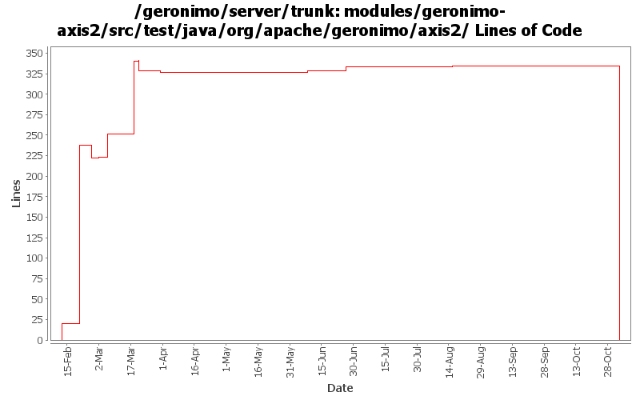

[root]/modules/geronimo-axis2/src/test/java/org/apache/geronimo/axis2
 testdata
(0 files, 0 lines)
testdata
(0 files, 0 lines)
 doclitbare
(0 files, 0 lines)
doclitbare
(0 files, 0 lines)
 rpclit
(0 files, 0 lines)
rpclit
(0 files, 0 lines)
 simple
(0 files, 0 lines)
simple
(0 files, 0 lines)

| Author | Changes | Lines of Code | Lines per Change |
|---|---|---|---|
| Totals | 36 (100.0%) | 659 (100.0%) | 18.3 |
| dims | 21 (58.3%) | 588 (89.2%) | 28.0 |
| jgenender | 2 (5.6%) | 39 (5.9%) | 19.5 |
| gawor | 6 (16.7%) | 25 (3.8%) | 4.1 |
| jdillon | 1 (2.8%) | 7 (1.1%) | 7.0 |
| prasad | 6 (16.7%) | 0 (0.0%) | 0.0 |
GERONIMO-3565. Modules distributed amongst framework/modules and plugins
0 lines of code changed in 6 files:
got ridd of initContextRoot() method that wasn't thread safe (GERONIMO-3495)
4 lines of code changed in 1 file:
use the annotation Holder object for injections for POJO web services
3 lines of code changed in 1 file:
remove dependency on ant class
3 lines of code changed in 1 file:
updated handler processing
1 lines of code changed in 1 file:
fix rpc test
12 lines of code changed in 1 file:
getting service injection working right plus a bunch of other improvements
2 lines of code changed in 1 file:
re-org imports, catch Exception instead of more specific XmlException
1 lines of code changed in 1 file:
Get failing test to work. When trying to load HandlerChainsType, we have to use HandlerChainsDocument's Factory to parse the xml
10 lines of code changed in 1 file:
Make this compile again... not sure its the right behavior
7 lines of code changed in 1 file:
Fix for GERONIMO-2979 - More improvements to the Geronimo Axis2 Integration
126 lines of code changed in 1 file:
Add test for application.xml vs default generated plan
39 lines of code changed in 2 files:
Fix for GERONIMO-2913 - minor changes to JettyEJBWebServiceContext and TomcatEJBWebServiceContext for Axis2
Fix for GERONIMO-2914 - Axis2: a few changes to set the servicepath, contextroot correctly in EJB to allow getWSDL() test working correctly
Fix for GERONIMO-2894 - Restructure geronimo-axis2 code to split between EJB and POJO containers
Thanks a ton Lin.
2 lines of code changed in 1 file:
Fix for GERONIMO-2876 - Initial web service EJB support for Axis2
3 lines of code changed in 1 file:
Fix for GERONIMO-2888 - Axis2WebServiceContainerTest getting failed due to missing libraries in the classpath & GERONIMO-2877 - Minor improvement to Axis2 Jaxws Integration
2 lines of code changed in 1 file:
Replace tabs with spaces (NO code changes)
206 lines of code changed in 3 files:
running dos2unix and set svn:eol-style native ONLY (no code changes)
6 lines of code changed in 6 files:
Fix for GERONIMO-2852 - Test Case to Axis2WebServiceContainer
212 lines of code changed in 4 files:
Fix for GERONIMO-2824 - port the handler tests from CXF to Axis2
20 lines of code changed in 2 files: